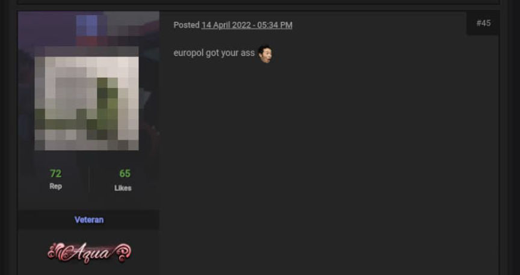
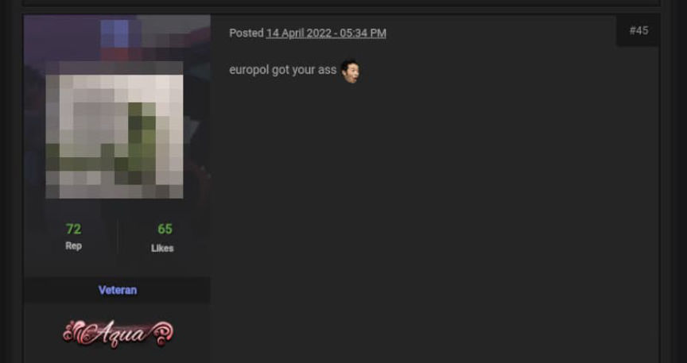

Classified NATO Documents Are Being Sold on the Darkweb
~1 min read | Published on 2022-09-12, tagged Classified-Documents using 200 words.
Hackers are selling classified NATO documents on the darkweb, according to a local news organization.
The Armed Forces General Staff agency of Portugal (EMGFA) suffered a “prolonged and unprecedented cyberattack” that resulted in the sale of classified NATO documents on the darkweb, according to the local news organization Diario de Noticias.
According to Bleeping Computer’s report, “American cyber-intelligence agents noticed the sale of stolen documents and alerted the U.S. embassy in Lisbon, which in turn warned the Portuguese government about the data breach.”

In response to questions from Diario de Noticias, the Prime Minister’s office wrote:
“Whenever there is a suspicion of compromising the cybersecurity of information system networks, the situation is extensively analyzed and all procedures are implemented to reinforce cybersecurity awareness and the correct handling of information to face new types of threats. If, and when, a security compromise is confirmed, the subsequent investigation into whether there was disciplinary and/or criminal liability automatically determines the adoption of appropriate procedures.”
News outlets have reached out to the involved agencies, but it appears as if they will not be offering any more information.
Classified NATO documents stolen from Portugal, now sold on darkweb | www.bleepingcomputer.com, archive.is, archive.org
The Armed Forces General Staff agency of Portugal (EMGFA) suffered a “prolonged and unprecedented cyberattack” that resulted in the sale of classified NATO documents on the darkweb, according to the local news organization Diario de Noticias.
According to Bleeping Computer’s report, “American cyber-intelligence agents noticed the sale of stolen documents and alerted the U.S. embassy in Lisbon, which in turn warned the Portuguese government about the data breach.”

“We contribute to national and international security” | EMGFA website
In response to questions from Diario de Noticias, the Prime Minister’s office wrote:
“Whenever there is a suspicion of compromising the cybersecurity of information system networks, the situation is extensively analyzed and all procedures are implemented to reinforce cybersecurity awareness and the correct handling of information to face new types of threats. If, and when, a security compromise is confirmed, the subsequent investigation into whether there was disciplinary and/or criminal liability automatically determines the adoption of appropriate procedures.”
News outlets have reached out to the involved agencies, but it appears as if they will not be offering any more information.
Classified NATO documents stolen from Portugal, now sold on darkweb | www.bleepingcomputer.com, archive.is, archive.org